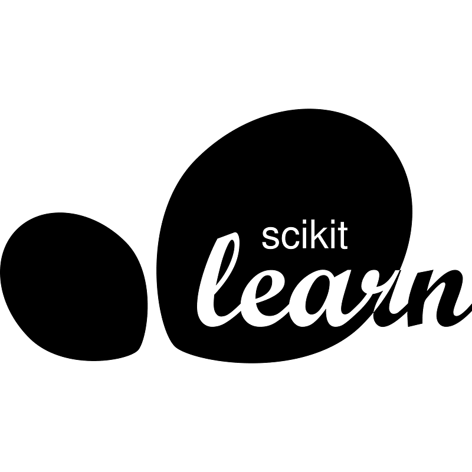

Digital Commons
in action
Explore real-world examples of open-source projects that have transformed the digital landscape and demonstrate the power of commons-based infrastructure.

Scikit-learn
Scikit-learn is provided for free as a Python library, available for anyone to use, modify, and distribute under the permissive BSD license. The project is maintained and developed by a core team of developers, primarily based at Inria, and a global community of contributors who voluntarily dedicate their time and expertise to improve the library.
License: BSD 3-Clause
INGRES
Database System
An example of a transition from proprietary to commons infrastructure. Originally developed as proprietary software with restricted access, Ingres opened in 2004, making the code publicly accessible. Open-source communities began contributing, leading to significant changes and a shift in governance. A new organization was established to coordinate the open development process, demonstrating how digital infrastructures can transition from closed, profit-driven systems to open, collaboratively-developed commons.
Transition: Proprietary → Open Source (2004)
Linux
Linux is one of the most well-known projects in the commons. It is an open-source operating system used by over 96% of the top 1 million servers. A collaborative effort spanning decades, Linux demonstrates the power of distributed development and community-driven innovation.
License: GNU GPL-2.0 WITH Linux-syscall-note
Contributors: 17,900+
React
React started as an internal project at Meta (Facebook), but eventually was shared as an open-source project. Since this transition, it has grown to be the backbone of over a million websites, including Netflix. This demonstrates how corporations can contribute significantly to the commons while benefiting from it.
Maintained by: Meta & Community Contributors
Wikipedia
Wikipedia, the free encyclopedia, is the largest reference work in history. Maintained entirely by volunteers worldwide, these collective contributions lead to a freely accessible repository of human knowledge. It represents one of the most successful examples of a digital commons.
Model: Collaborative Volunteer Encyclopedia